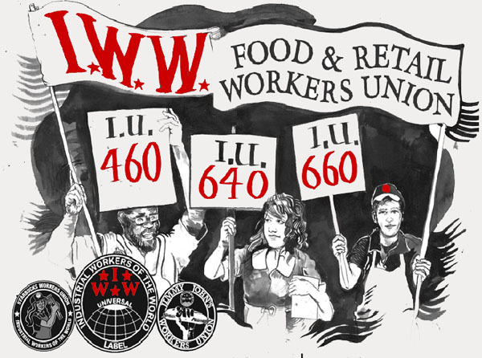

Submitted on Thu, 11/19/2015 - 5:28pm
By Phinneas Gage - Recomposition, November 6, 2015
This is the third part of a series of concrete examples (Part I – Part II) and very brief summaries of organizations that have some component of direct action and a form of collective bargaining that operate outside the labour relations framework. The following examples are from the IWWs organising efforts in food service. This includes fast food as well as grocery stores in a lot of the examples the IWW actually engaged in innovative organising that broke ground in more high profile campaigns like the well known “Fight for Fifteen” campaigns around raising the minimum wage in the USA.
4. The IWW in Food Service
a). The Jimmy John’s Workers Union
The Jimmy John’s Workers Union started as an effort by the Twin Cities General Membership Branch of the IWW to organise in Fast Food. The campaign at it’s height had shop committees in multiple shops and a city wide committee. Ultimately, the campaign made a decision to go for an NLRB election and only failed by two votes with 85 in favour and 87 against. After that point the campaign went into steep decline but the organisers still managed to create an impressive track record of gains for themselves and their co-workers including: reversing decisions by management to fire people, addressing health and safety concerns for delivery drivers, tips jars, a city wide pay raise, and scheduling issues as well as countless smaller individual grievances in their shops. There is still an underground IWW presence in many shops across the USA and a very public campaign in Baltimore.
Advantages: Large numbers of workers mobilised. A city wide organisation spanning at all ten shops in the Twin Cities (Minneapolis and St. Paul, Minnesota) at its height. Coordination through city wide mass meetings. The media work on this campaign was impressive including making the New York Times. Impressive gains before, during, and after the failed certification election.
Disadvantages: Campaign wasn’t merely oriented towards a youth counter culture, it celebrated it and was itself a function of it. Substance abuse on the campaign was a major issue and led to key organisers putting their jobs at risk and getting injured unnecessarily. Logistically it was very lax with campaign data, mostly being kept in the personal notebooks of key organisers. Many organisers were also goal oriented to the point of certification becoming an all or nothing proposition and the campaign slowly contracted as key people moved on to other projects after the certification campaign failed, despite efforts to downplay the legal process by some organisers. As well the ability to join the JJWU campaign but not the IWW also created a tiered membership that made it ambiguous as to who was actually a member and difficult to consolidate membership beyond just the shop. Ultimately failed to bridge some of the demographic divides in the industry.
What happened?
There is still an underground IWW presence in some shops across the USA and a very public campaign in Baltimore. After the certification election six key organisers were fired over a publicity stunt involving a fight for sick days and the NLRB process is now on its last appeal several years later. The campaign is an impressive achievement for an all volunteer union on a shoe string budget.
b). The Starbucks Workers Union
Where the Jimmy John’s Workers Union in the Twin Cities peaked at a failed certification election the Starbucks Workers Union really got going after a failed attempt at certification. In 2003 wobblies started organising at a Starbucks in Manhattan. In 2004 they tried for a union certification election. The National Labour Relations Board defined their bargaining unit as every Starbucks in Manhattan. which for an organising committee of only a handful became unfeasible as it would include hundreds of workers. So the campaign chose to continue outside of the recognition framework. Since that time over a decade ago the SWU has ran campaigns in dozens of cities going public in towns like New York, Chicago, Quebec, Minneapolis and Dallas. Countless underground committees have pushed back against management to rack up impressive wins like: changes to scheduling practices, enforcing the right to take bathroom breaks, winning a two dollar an hour raise for all Starbucks workers in New York, and improvements to health and safety. Perhaps their greatest achievement was winning Martin Luther King Day as a paid day off in the USA for all Starbucks workers, many of whom are African American. The union has also won countless small victories overturning discipline, fighting against sexual harassment and discrimination at work and extending international solidarity to Baristas in Chile. The union has made national press several times and has won several labour relations board rulings cementing some legal recourse to unions that exist outside the contract and certification process.
Advantages: Extremely fluid organisation allowed for rapid expansion to other cities and shops without too much red tape. The campaign can coordinate demands over multiple cities and countries. Strong emphasis on direct action, the campaign has repeatedly avoided certification elections since the initial defeat in New York and has since developed a strong practice of shop floor unionism.
Disadvantages: Like other IWW efforts in Fast Food the campaign suffers from a high turnover in their workforce and all the problems that come from that. The campaign was logistically lax at some points but fairly strong at others. Part of their very fluid structure made creating democratic structures and decision making difficult. The campaign also had a tendency to go public with a small minority in the shop. Part of this was due to a reliance, probably an over reliance, on media tactics. These strategic decisions put a tremendous amount of strain on key personalities and also create problems as far as giving credit to other people, creating an investment on the part of the less high profile activists, and bringing constant scrutiny and attention from management. Also when the Quebec wobblies joined the SWU from an already existing union formation things quickly fell apart due to differing emphases on direct action and a greater reliance on certification votes (which failed) in Canada. Ultimately the organisers quit en mass and called it direct action.
What happened?
The IWW still has organising activity at Starbucks stores all over North America and a public presence in New York that is going on twelve years this year.